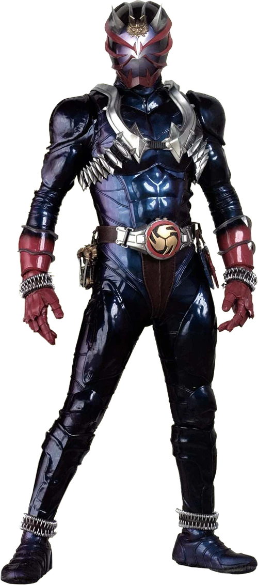

Inui Takumi is the main protagonist of Kamen Rider 555. He is the Wolf Orphnoch
Once transformation is completed, the Faiz Armor has several key features in its design to offer protection to the user. Like all Rider gears, the Faiz armor manifests when the Faiz Driver generates Photon Blood,
Rider Statistics[3]Rider Height: 186 cm
Rider Weight: 91 kg
Rider Senses[3]
Eyesight: 15 Km
Hearing: 5 Km
Ability Parameters[3]
Punching Power: 2.5t
Kicking Power: 5 t
Maximum Jump Height: 35 m
Maximum Running Speed: 100 m per 5.8 seconds

Accel form is a temporary transformation that allows Faiz to move at the speed of sound for roughly 10 seconds.
Rider Statistics[2]Rider Height: 185 cm
Rider Weight: 91 kg
Rider Senses[2]
Eyesight: 20 km
Hearing: 20 km
Ability Parameters[2]
Punching Power: 3.75 t
Kicking Power: 7.5 t
Maximum Jump Height: 52.5 m
Maximum Running Speed: 100 m. per 0.0058 sec

By inserting the Faiz Phone into the Faiz Blaster briefcase and entering the transformation code again, Faiz can access Blaster Form
Rider Statistics[2]Rider Height: 186 cm
Rider Weight: 94 kg
Rider Senses[2]
Eyesight: 20 km
Hearing: 30 km
Ability Parameters[2]
Punching Power: 4 t
Kicking Power: 8 t
Maximum Jump Height: 55 m
Maximum Running Speed: 100 m. per 5 sec